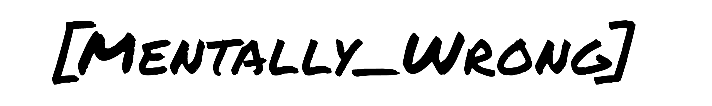

Hi, I'm Bryan Millett, a gaming nerd with a deep love for music, film, and art. Design plays a significant role in my life, allowing me to learn about the world and create art that reflects my understanding of it. Mentally_Wrong began as a username on platforms like Instagram, Twitter/X, Steam, PlayStation, and YouTube. It originally meant someone isn't in their right mind, but now it's my side project brand, giving me creative liberty to make content that truly satisfies me. The name "Mentally_Wrong" reflects my belief that being different is a strength, and I embrace my unique perspective in everything I do. I never quite fully fit in wherever I go so in a way I was always mentally wrong. Strange as I am, I embrace it and use it to fuel my creativity and connect with others who feel the same way. Some say I am wrong in the head, I just say I am Mentally_Wrong
The idea for Mentally_Wrong as a brand, not just a username, came from a need to scratch a creative itch that traditional graphic design jobs couldn't satisfy. While it is nice to create for various brands and companies; I felt that should also celebrate what drives me. That's why Mentally_Wrong is now a major part of my life, offering a space for genuine creation and a more human approach to content creation.
Mentally_Wrong is my personal venture, while BMillett Media is my professional one. It's the difference between Business-to-Business (B2B) and Business-to-Consumer (B2C) marketing. BMillett Media caters to companies looking to hire me, whereas Mentally_Wrong works directly with individuals who prefer a personal touch over automated responses. Think of it as an old-school, retro approach where genuine creation attracts genuine people seeking genuine goods.
Currently, I'm growing Mentally_Wrong through Twitch and YouTube by creating meaningful content and streaming. My content revolves around pop culture, including my questions, analysis, and relationship with it. Although I have a personal interest in video games, my aim is to be straightforward and authentic across all walks of life. At Mentally_Wrong, we value honesty and clarity over corporate jargon.
Mentally_Wrong is more than just a brand; it's a community where we embrace our quirks and differences. If you're someone who feels a bit out of place or "mentally wrong," you're not alone. Join me on this journey of creativity, self-expression, and genuine connection. Let's celebrate our uniqueness together!
Establishing a brand of rejects is not easy nor cheap. Currently, Mentally_Wrong is a one-man-show and that one-man can use all the help he can get. Between looking for the next step in my main career and classes for a second degree in Software Development, one can understand why Mentally_Wrong is a side project and not the next big step in my career. Anything and everything helps to keep the lights on and the dream alive.
A Zazzle store is ready if you would rather purchase something from me instead of leaving a tip or donation; Mentally_Wrong designed products is in the works. Currently available is No Soliciting lawn signs designed to be fun and to keep unwanted solicitors from knocking on your door. If you are a fan of my YouTube content, I have created deskmats inspired by the backgrounds of my current videos. I take pride in my video content and a great deal of attention is given to the animated backgrounds in each of my videos.More to come in the near future.
If you want to join in my creative efforts, feel free to reach out to me and let's get in touch! I am always open to new opportunities and more than willing to hear you out!